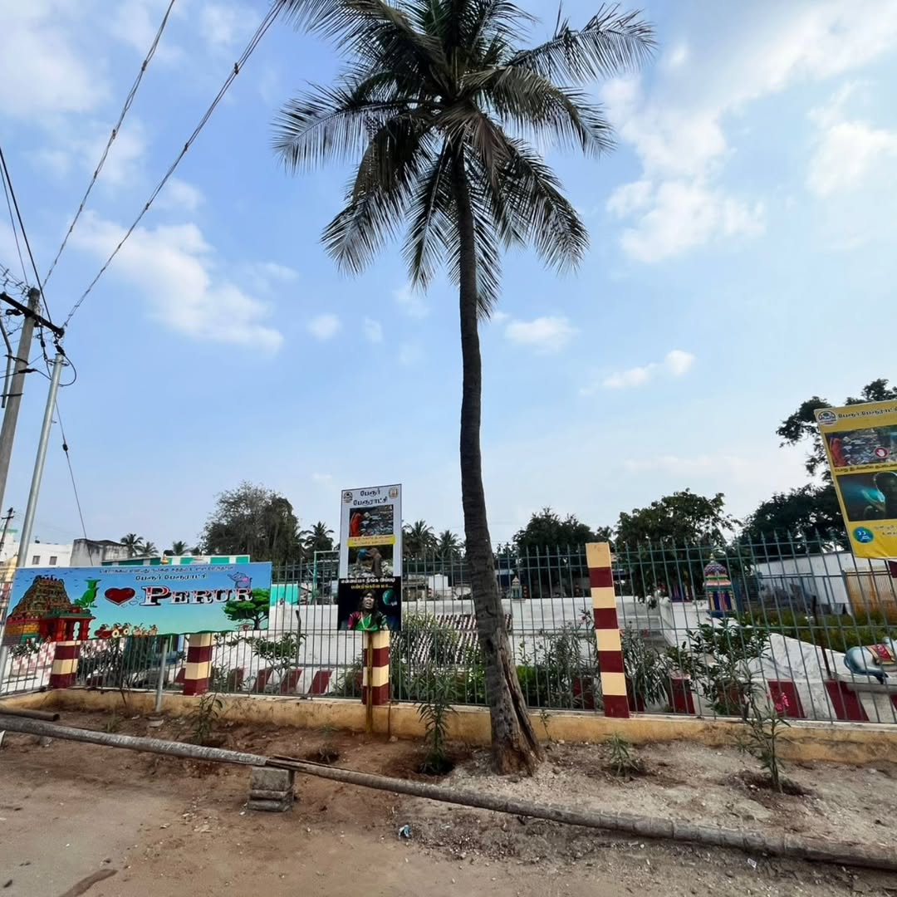
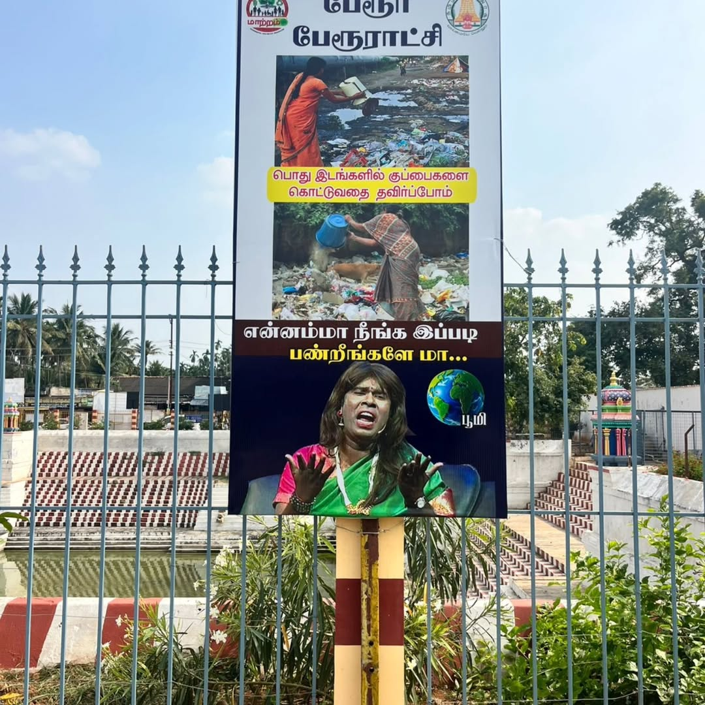
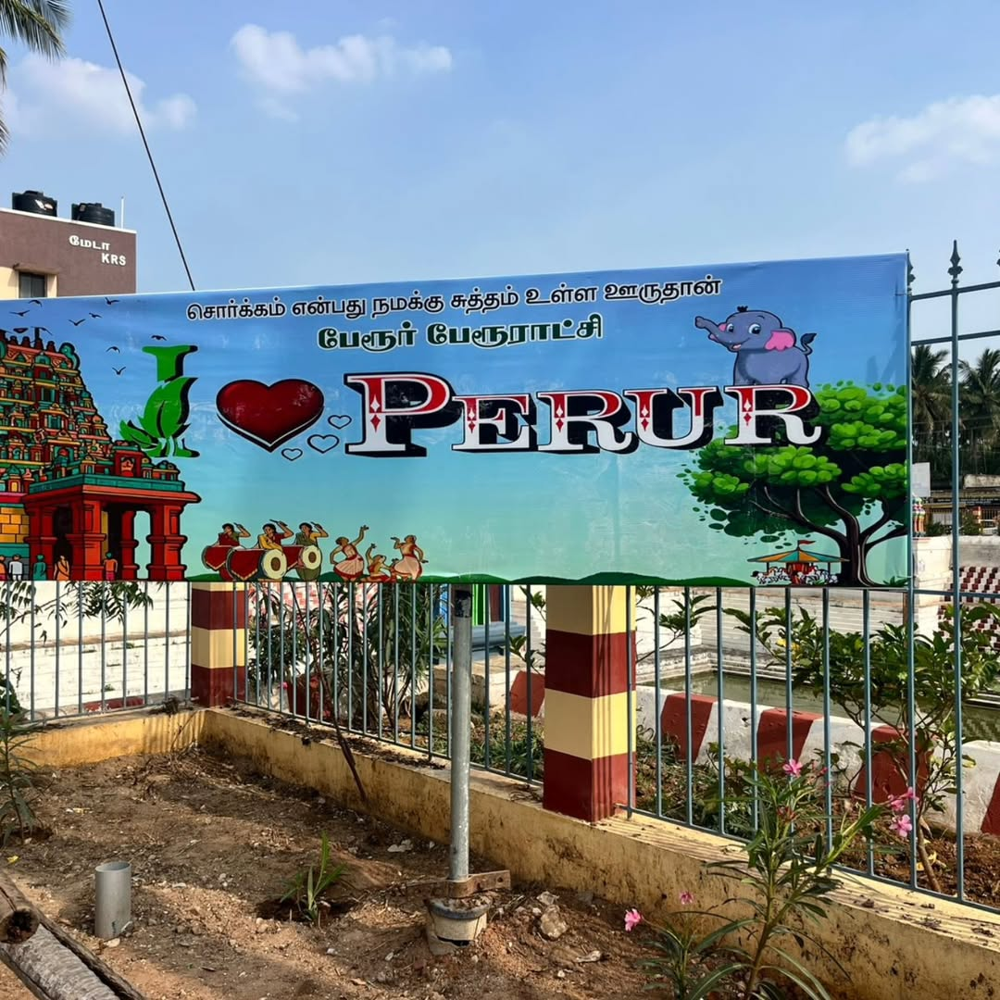
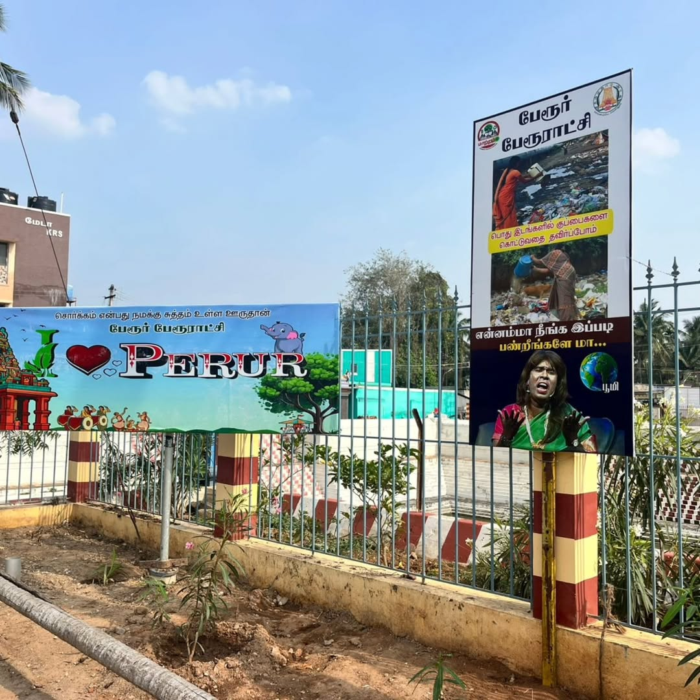
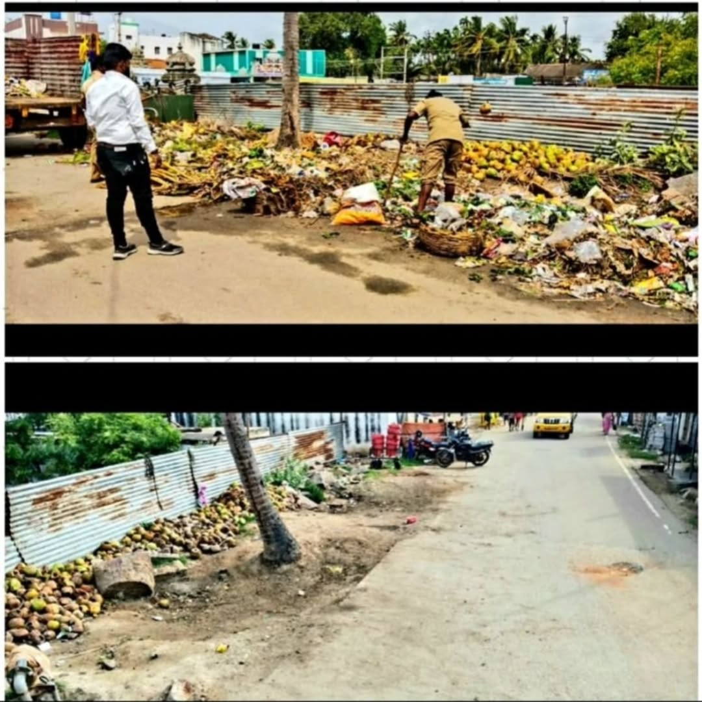
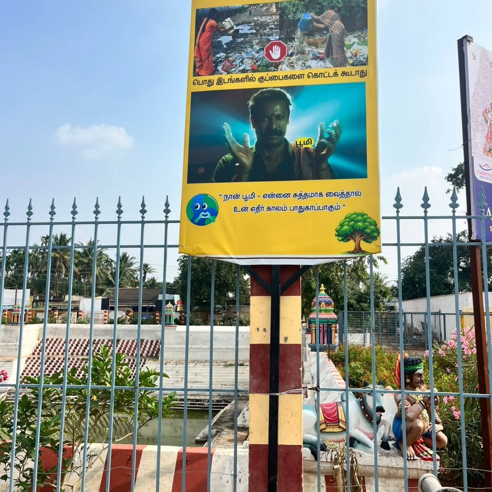
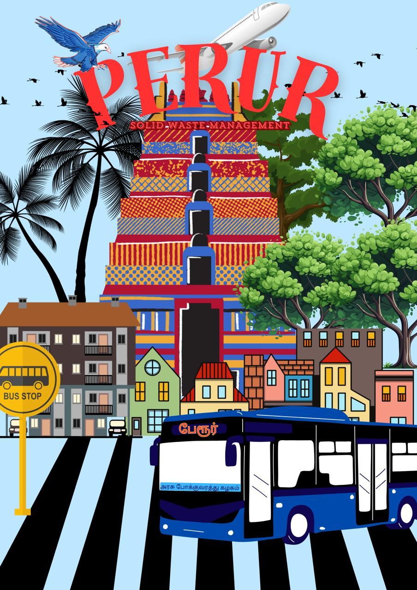
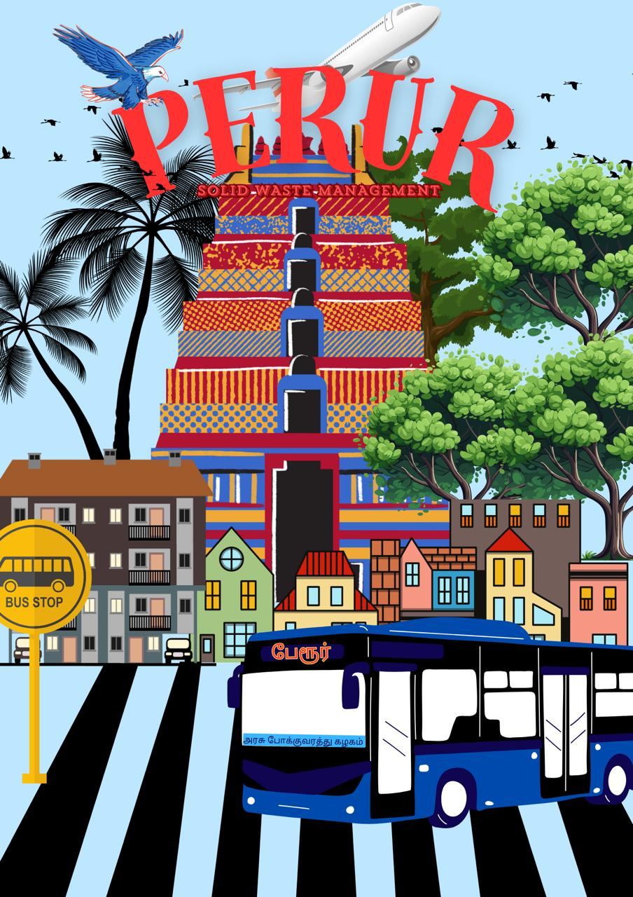
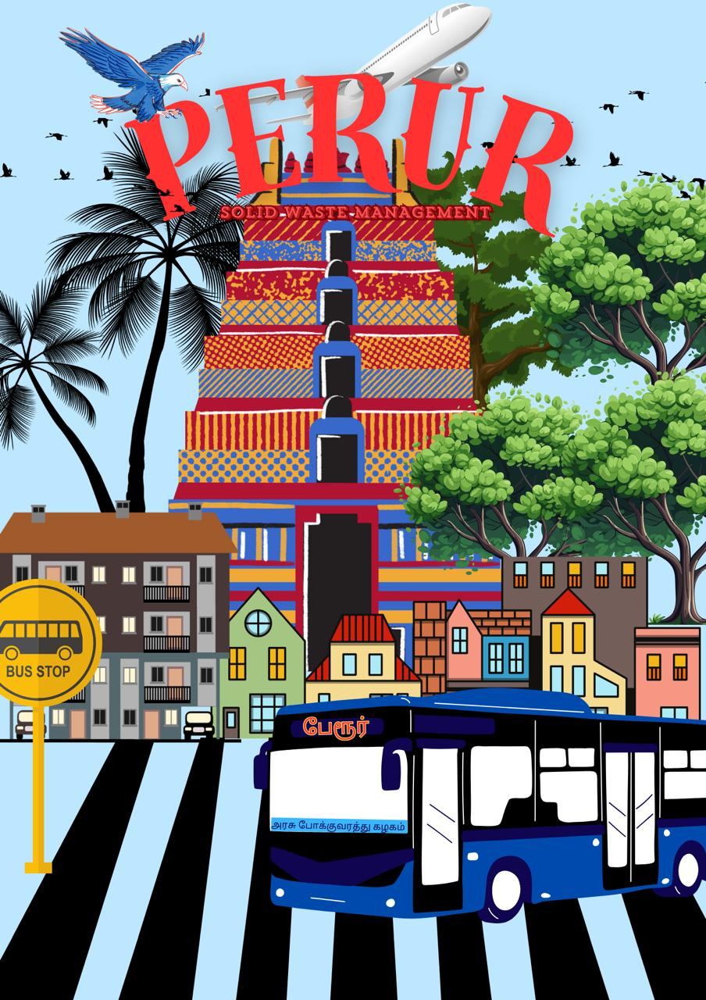
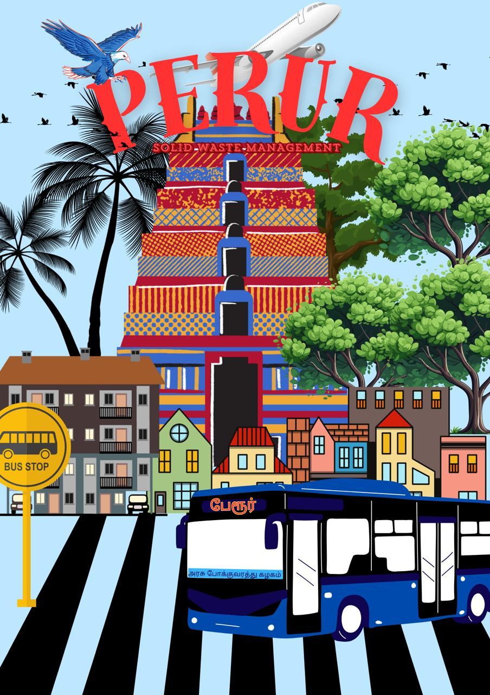

📸 Project Photo Gallery







 


A successful environmental restoration initiative by MAATRAM ON to revive the Noyal River ecosystem in Perur. This project involved waste removal, awareness drives, water flow restoration, and community participation.
The Perur Noyal River Cleaning Project focused on removing plastic waste, clearing blockages, restoring river flow, and improving the cleanliness and ecological balance of the Noyal River. Volunteers from local communities, students, and environmental groups actively participated in this initiative.
